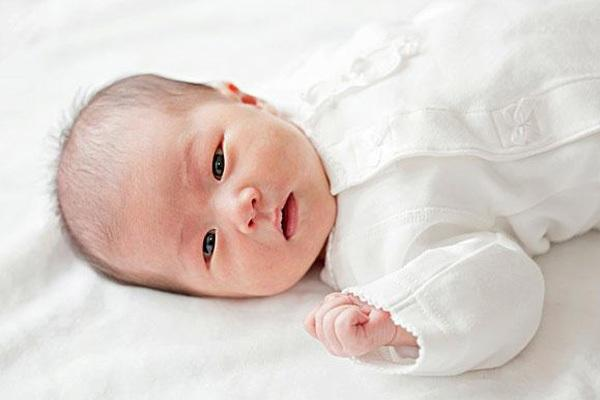

初秋
2020-03-02
楼主
宝宝突然出现黄疸了，怎么办？该怎么让黄疸消退？
浏览量26678
2020-03-02 11:02
宝宝出生两天后，回家突然发现他的脸发黄，也不是很黄，听朋友说不用太担心，刚出生的宝宝是这样的，但是又怕宝宝这样有什么问题，请问该怎么让宝宝的黄疸消退呢？

宝宝吧>帖子详情
初秋
2020-03-02
宝宝出生两天后，回家突然发现他的脸发黄，也不是很黄，听朋友说不用太担心，刚出生的宝宝是这样的，但是又怕宝宝这样有什么问题，请问该怎么让宝宝的黄疸消退呢？
妍妍妈育儿团队
2020-03-03 11:30
@初秋 楼主你好，刚出生的婴儿很容易出现黄疸的现象，有时候宝宝在回家前就有黄疸升高的情况，有时是回家几天以后才出现。所以妈妈不要太担心，宝宝的面部偏黄，但是不是太明显，母乳喂养的新生儿在生后一周内，由于热量和液体摄入不足、排便延迟等，使血清胆红素升高，几乎2/3母乳喂养的新生儿会出现这种黄疸，这种原因导致的黄疸，可以通过增加母乳喂养量和频率而得到缓解，母乳性黄疸婴儿一般体格生长良好，没有任何临床症状，不需治疗，停喂母乳24至48小时黄疸会明显减轻，至黄疸自然消退 。你加下我的微信： （长按复制微信） 我这边有关于解决宝宝黄疸的课程资料，我分享给你。我是一名宝妈，同时也是一名育儿老师，你有任何的育儿问题都可以问我。
阿陌
2020-03-04 12:00
@初秋 你找依依妈就对了，之前我家宝宝也是出生几天，刚出生的时候是好好的，一回家了就出现黄疸了，当时吓到了，以为自己没有把宝宝护理好。好在认识了依依妈，她不仅安慰了我，还教会了让宝宝黄疸自行消退的方法，更重要的是分享了课程资料给我。按照依依妈的方法，宝宝的黄疸在十几天后就完全退掉了，依依妈人真的非常好，我如果遇到其他的育儿问题，也会问她，每次都很耐心的帮我。
小丽
2020-03-08 14:02
@阿陌 我家宝宝也是出现了黄疸，不知道该怎么办？有没有什么好的办法？想求助依依妈，我也可以找她领课程资料吗？
阿陌：@小丽 可以的，你直接加她微信： （长按复制微信） 找她领就可以。
银银
2020-03-12 14:21
@初秋 楼主，依依妈的课程资料要收费么？多少钱啊？可以分享一份给我不？
初秋 ：
不需要收费的，直接找她免费领就可以的，人特别好，资料很齐全。
银银：@初秋
好的，谢谢楼主，那我找她领。
珊
2020-03-18 14:23
@初秋 楼主，我家宝宝也出现了和你家宝宝一样的情况，也是脸部偏黄，宝宝这样该怎么做啊？你加了依依妈后，现在情况怎么样了啊？
初秋 ： 现在宝宝的黄疸已经好了，是按着依依妈的方法，你加下她的微信： （长按复制微信） 她会教你的。
一帆风顺
2020-03-20 15:23
给1楼点赞，楼主加依依妈准没错，我也是通过依依妈给我的课程资料，现在我家宝宝黄疸已经好了，黄疸退的很快，依依妈的方法，真的是太实用了。
乐乐
2020-03-20 16:43
看了大家的留言，我也分享一下我的经历，我是顺产的，所以宝宝出生一天后我就带着宝宝回家了，结果回家第二天就发现宝宝的脸有点发黄，当时想到宝宝这样肯定是出现黄疸了。我赶紧去咨询了依依妈，依依妈给我发了关于宝宝黄疸的课程资料，资料里有详细的出现黄疸的原因和消退黄疸的办法，按着依依妈的方法，我家宝宝黄疸消退的很快。
初秋： 是的，依依妈真的不愧为育儿达人，我家儿子现在脸已经白白嫩嫩的了，各位宝妈如果有啥育儿问题都可以直接问依依妈，她的微信： （长按复制微信） 她会耐心的教大家的。